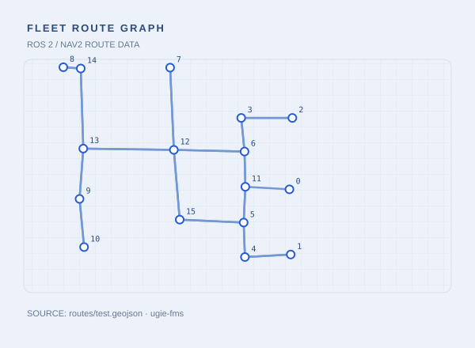
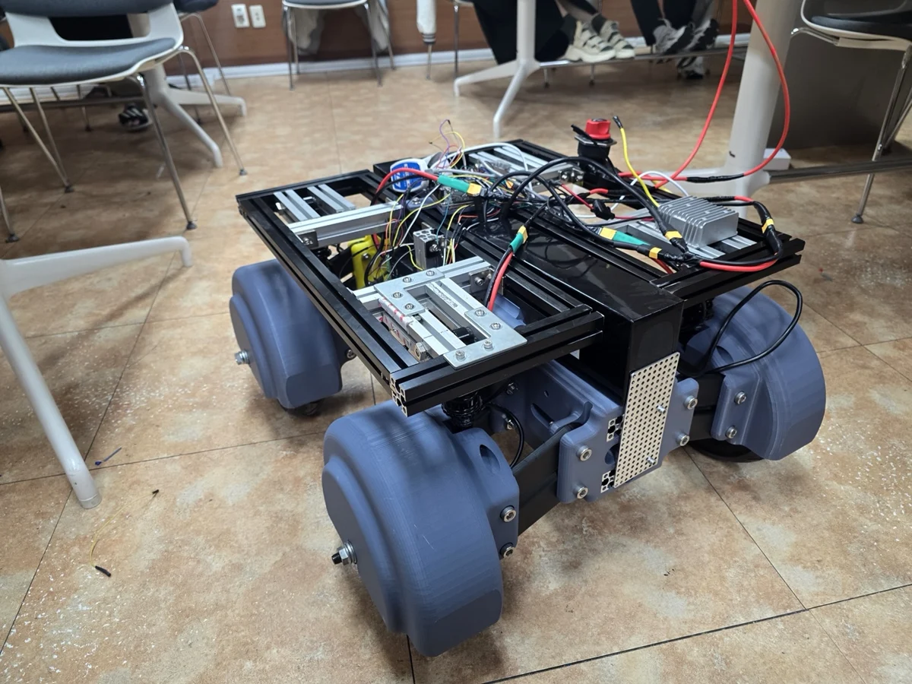
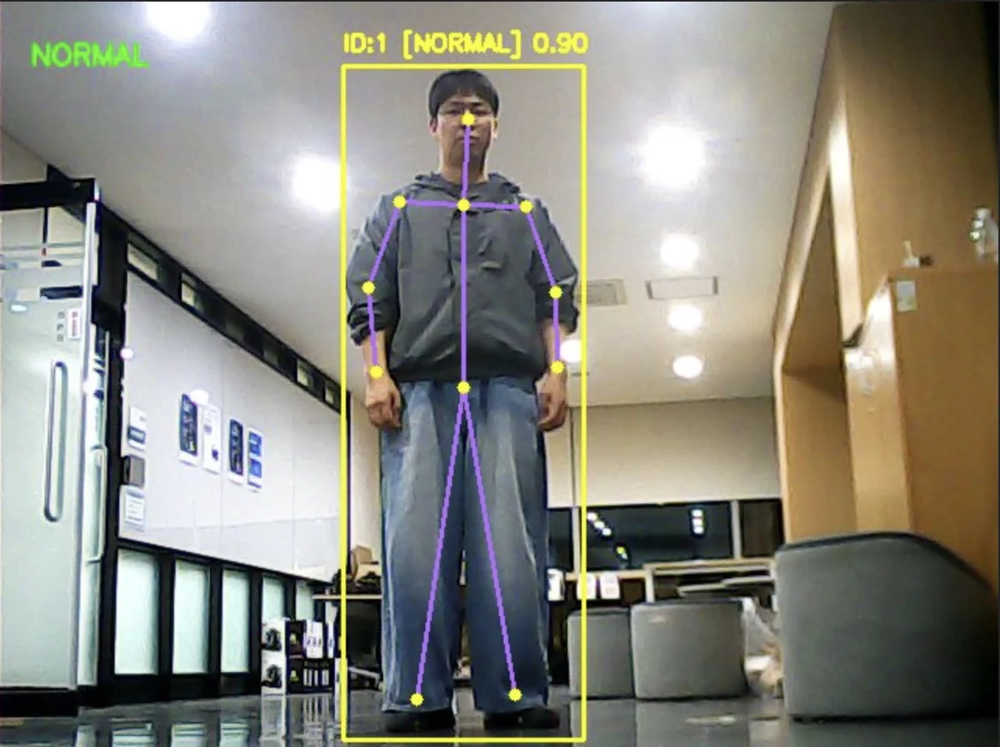
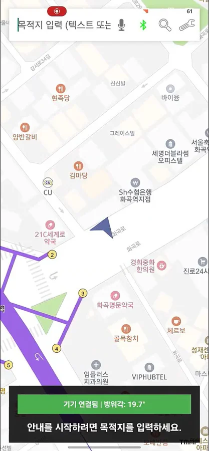
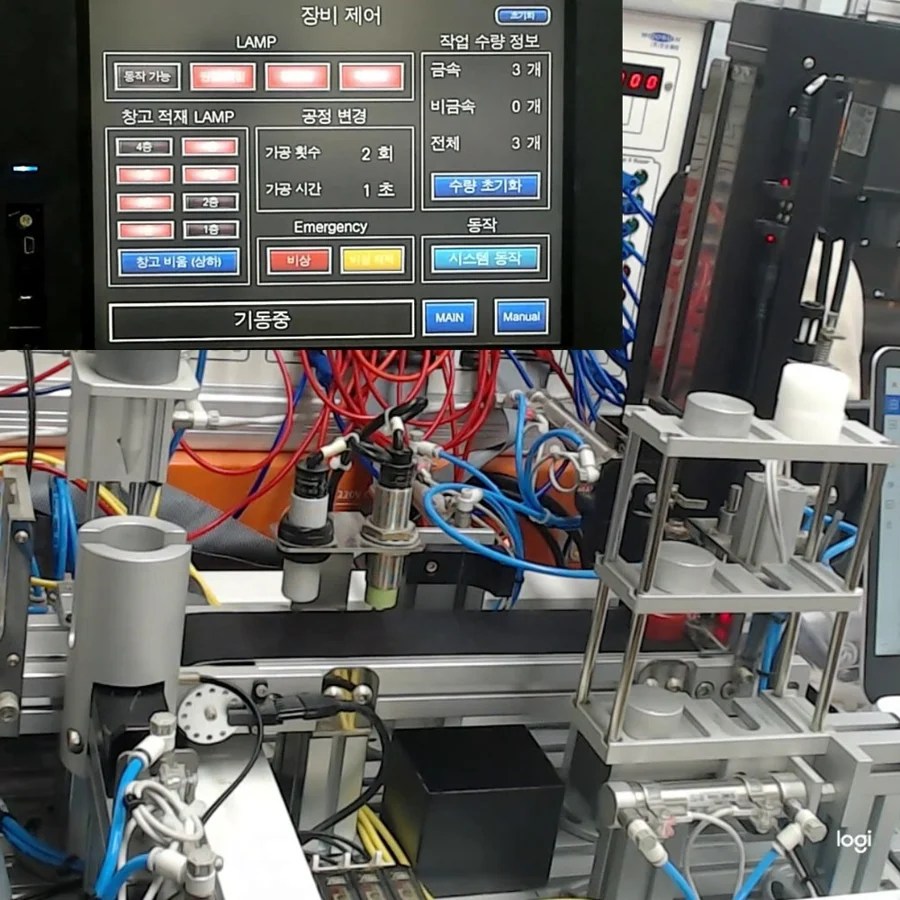

센서와 제어기부터 ROS 2, 관제까지 데이터 흐름을 연결합니다.
ROBOT SOFTWARE / EMBEDDED
이명욱
Robot Software Developer
직접 움직이고, 테스트하고, 고치며 로봇 시스템을 만들어갑니다.
로그와 재현 조건을 확인하며 문제 구간을 좁혀 갑니다.
코드가 실제 로봇에서 어떻게 움직이는지 끝까지 확인합니다.
01 / SKILLS
사용 기술
프로젝트에 실제로 적용한
기술을 기준으로 정리했습니다.
Languages
C / C++ / Python
Java / Dart
STM32 펌웨어, ROS 2 노드, 모바일 앱
Robot Software
ROS 2 Humble / Jazzy / Nav2
OpenCV / Camera Calibration
센서 처리와 로봇 주행 패키지 적용
Embedded
STM32F407 / H743 / FreeRTOS
UART / I2C / DMA / Timer / PWM
카메라 입력, 센서 통신, 모터 제어
Integration
Linux / Zenoh / Git
Bluetooth / Firebase
로봇 상태 연동과 장치 간 통신
02 / PROJECTS
로봇 프로젝트
제가 맡은 역할과 구현 내용을
프로젝트별로 정리했습니다.

Route Graph / System Architecture

03 / EMBEDDED AI
AIMing Project
STM32H743에서 카메라 입력과 AI 추론, Pan/Tilt 제어를 연결한 PoC
MY ROLE추론 파이프라인, FreeRTOS 태스크, 하드웨어 통합
프로젝트 상세
04 / EDGE AI
Tracking Patrol Robot
Pose와 객체 인식 결과를 로봇의 추적 명령으로 연결한 순찰 로봇
MY ROLE인식 결과 기반 트래킹 로직 및 제어 시스템 연동
프로젝트 상세
05 / EDGE SYSTEM
VIP Wearable
보행 경로와 AI 인식 결과를 음성과 진동 안내로 전달하는 웨어러블
MY ROLEIMU, 햅틱 제어 및 Bluetooth, Android 연동
프로젝트 상세
06 / TRAINING PROJECT
PLC Mini Project
Mitsubishi PLC와 HMI로 창고 적재, 비우기, 수동 제어를 연결한 2인 교육 프로젝트
GX Works2 / Ladder Logic / Sequence Control
03 / ABOUT
로봇이 실제로 움직이는
순간이 가장 재미있습니다.
센서 값을 읽고 모터를 제어하는 펌웨어에서 시작했습니다. 이후 ROS 2와 로봇 관제까지 범위를 넓히며, 장치 사이의 데이터를 하나의 동작으로 연결하는 일을 해왔습니다.
문제가 생기면 로그와 재현 조건부터 확인합니다. 익숙하지 않은 기술도 작은 단위로 시험하고, 실제 장치에서 동작을 확인하며 제 것으로 만듭니다.
EDUCATION & DIRECTION
대한상공회의소 서울기술교육센터
AI 융합 로봇 SW 개발자 과정 3기
인덕대학교 정보통신공학과
정보통신공학 학사 / 임베디드 제어와 로봇 프로젝트 경험
AMR와 로봇 시스템 통합
ROS 2 로봇과 다중 로봇 관제 사이의 통신 및 상태 흐름
04 / CONTACT
이명욱
Robot Software Developer
프로젝트 코드와 상세 구현은 GitHub에서 확인할 수 있습니다.
GitHub / Ugie01 AMR / Embedded / FMS